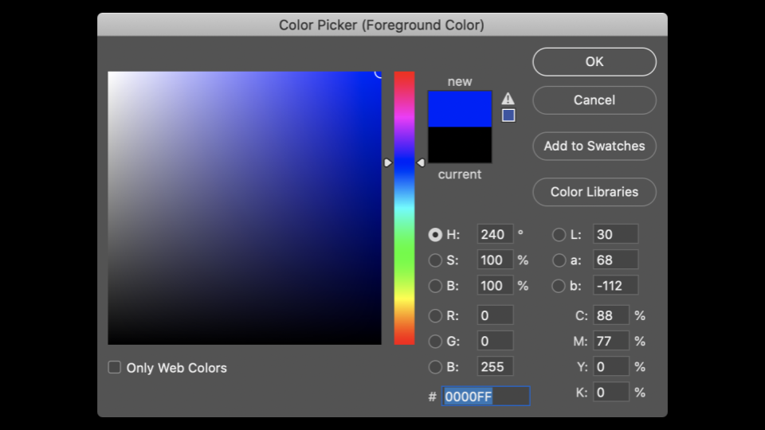
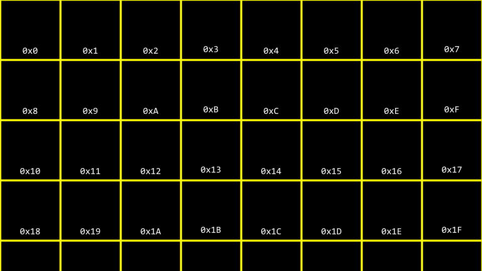
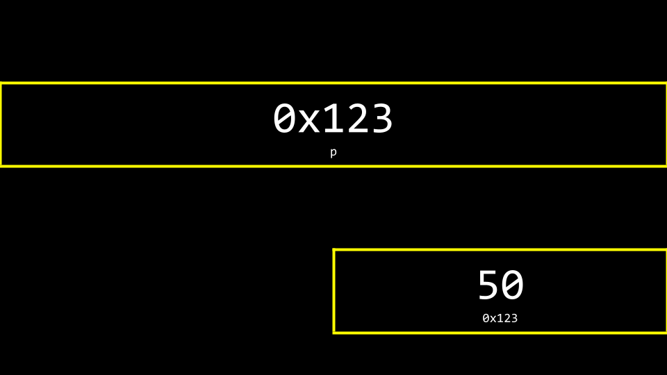
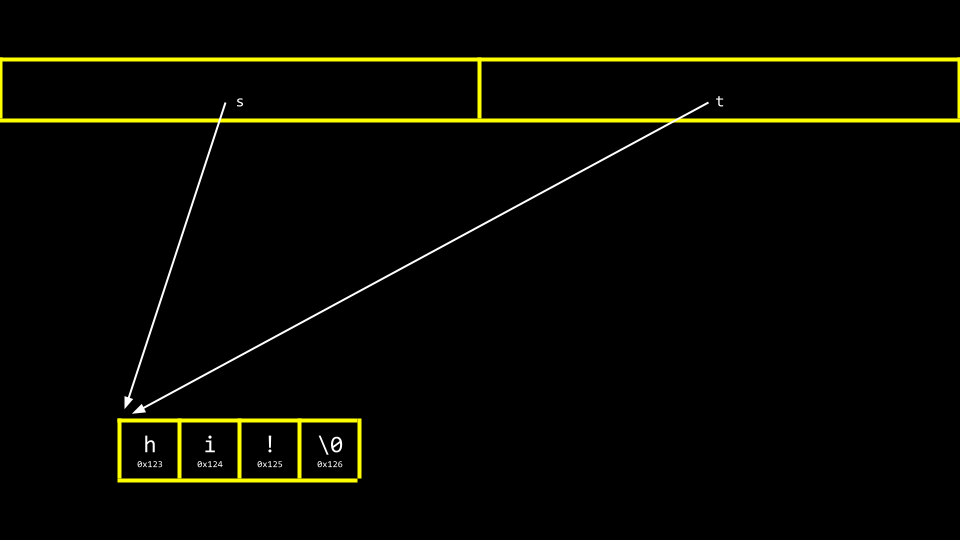
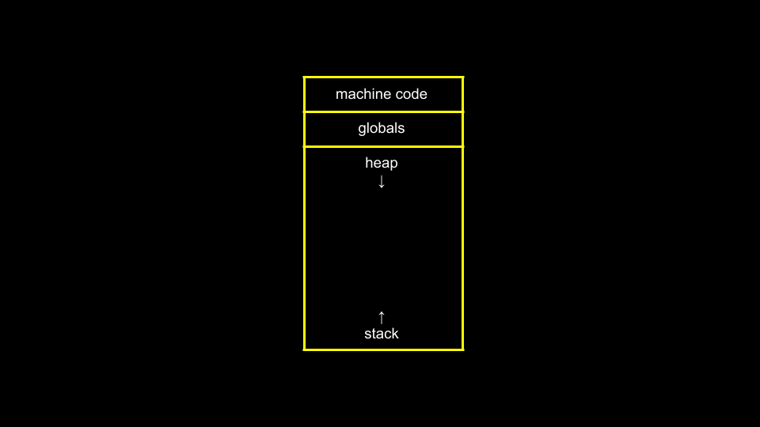

Lecture 4
- Welcome!
- Pixel Art
- Hexadecimal
- Memory
- Pointers
- Strings
- Pointer Arithmetic
- String Comparison
- Copying and malloc
- Valgrind
- Garbage Values
- Pointer Fun with Binky
- Swapping
- Overflow
scanf- File I/O
- Summing Up
Welcome!
- Today, we take off so many of the training wheels that you used to get your start in this class.
- In previous weeks, we talked about images being made of smaller building blocks called pixels.
- This week, we will go into further detail about the zeros and ones that make up these images. In particular, we will be going deeper into the fundamental building blocks that make up files, including images.
- Further, we will discuss how to access the underlying data stored in computer memory.
- As we begin today, know that the concepts covered in this lecture may take some time to fully click.
Pixel Art
- Pixels are squares, individual dots, of color that are arranged on an up-down, left-right grid.
-
You can imagine an image as a map of bits, where zeros represent black and ones represent white.

Hexadecimal
-
RGB, or red, green, blue, are numbers that represent the amount of each of these colors. In Adobe Photoshop, you can see these settings as follows:

Notice how the amount of red, blue, and green changes the color selected.
- You can see from the image above that color is not just represented by three values. At the bottom of the window, there is a special value made up of numbers and characters.
255is represented asFF. Why might this be? -
Hexadecimal is a system of counting that has 16 counting values. They are as follows:
0 1 2 3 4 5 6 7 8 9 A B C D E FNotice that
Frepresents15. - Hexadecimal is also known as base-16.
- When counting in hexadecimal, each column is a power of 16.
- The number
0is represented as00. - The number
1is represented as01. - The number
9is represented by09. - The number
10is represented as0A. - The number
15is represented as0F. - The number
16is represented as10. - The number
255is represented asFF, because 16 x 15 (orF) is 240. Add 15 more to make 255. This is the highest number you can count using a two-digit hexadecimal system. - Hexadecimal is useful because it can be represented using fewer digits. Hexadecimal allows us to represent information more succinctly.
Memory
-
In weeks past, you may recall our artist rendering of concurrent blocks of memory. Applying hexadecimal numbering to each of these blocks of memory, you can visualize these as follows:

-
You can imagine how there may be confusion regarding whether the
10block above may represent a location in memory or the value10. Accordingly, by convention, all hexadecimal numbers are often represented with the0xprefix as follows:
-
In your terminal window, type
code addresses.cand write your code as follows:// Prints an integer #include <stdio.h> int main(void) { int n = 50; printf("%i\n", n); }Notice how
nis stored in memory with the value50. -
You can visualize how this program stores this value as follows:

Pointers
-
The C language has two powerful operators that relate to memory:
& Provides the address of something stored in memory. * Instructs the compiler to go to a location in memory. -
We can leverage this knowledge by modifying our code as follows:
// Prints an integer's address #include <stdio.h> int main(void) { int n = 50; printf("%p\n", &n); }Notice the
%p, which allows us to view the address of a location in memory.&ncan be literally translated as “the address ofn.” Executing this code will return an address of memory beginning with0x. You can download this code here. - A pointer is a variable that stores the address of something. Most succinctly, a pointer is an address in your computer’s memory.
-
Consider the following code:
int n = 50; int *p = &n;Notice that
pis a pointer that contains the address of an integern. -
Modify your code as follows:
// Stores and prints an integer's address #include <stdio.h> int main(void) { int n = 50; int *p = &n; printf("%p\n", p); }Notice that this code has the same effect as our previous code. We have simply leveraged our new knowledge of the
&and*operators. You can download this code here. -
To illustrate the use of the
*operator, consider the following:// Stores and prints an integer's address #include <stdio.h> int main(void) { int n = 50; int *p = &n; printf("%p\n", p); }Notice that the
printfline prints the integer’s address.int *pcreates a pointer whose job is to store the memory address of an integer. You can download this code here. -
You can visualize our code as follows:

Notice that the pointer seems rather large. Indeed, a pointer is usually stored as an 8-byte value.
pis storing the address of the50. -
You can more accurately visualize a pointer as one address that points to another:

Strings
- Now that we have a mental model for pointers, we can peel back a level of simplification that was offered earlier in this course.
-
Modify your code as follows:
// Prints a string #include <cs50.h> #include <stdio.h> int main(void) { string s = "HI!"; printf("%s\n", s); }Notice that a string
sis printed. You can download this code here. -
Recall that a string is simply an array of characters. For example,
string s = "HI!"can be represented as follows:
-
However, what is
sreally? Where is thesstored in memory? As you can imagine,sneeds to be stored somewhere. You can visualize the relationship ofsto the string as follows:
Notice how a pointer called
stells the compiler where the first byte of the string exists in memory. -
Modify your code as follows:
// Prints a string's address as well the addresses of its chars #include <cs50.h> #include <stdio.h> int main(void) { string s = "HI!"; printf("%p\n", s); printf("%p\n", &s[0]); printf("%p\n", &s[1]); printf("%p\n", &s[2]); printf("%p\n", &s[3]); }Notice the above prints the memory locations of each character in the string
s. The&symbol is used to show the address of each element of the string. When running this code, notice that elements0,1,2, and3are next to one another in memory. You can download this code here. -
Likewise, you can modify your code as follows:
// Declares a string with CS50 Library #include <cs50.h> #include <stdio.h> int main(void) { string s = "HI!"; printf("%s\n", s); }Notice that this code creates a string using the
cs50.hlibrary. You can download this code here. -
Taking off the training wheels, you can modify your code again:
// Declares a string without CS50 Library #include <stdio.h> int main(void) { char *s = "HI!"; printf("%s\n", s); }Notice that
cs50.his removed. A string is implemented as achar *. This code will present the string that starts at the location ofs. This code effectively removes the training wheels of thestringdata type offered bycs50.h. This is raw C code, without the scaffolding of the cs50 library. You can download this code here. - You can imagine how a string, as a data type, is created.
- Last week, we learned how to create your own data type as a struct.
- The cs50 library includes a type definition as follows:
typedef char *string - This type definition, when using the cs50 library, is a simplified representation that allows one to use a custom data type called
string.
Pointer Arithmetic
- Pointer arithmetic is the ability to do math on locations of memory.
-
You can modify your code to print out each memory location in the string as follows:
// Prints a string's chars #include <stdio.h> int main(void) { char *s = "HI!"; printf("%c\n", s[0]); printf("%c\n", s[1]); printf("%c\n", s[2]); }Notice that we are printing each character at the location of
s. You can download this code here. -
Further, you can modify your code as follows:
// Prints a string's chars via pointer arithmetic #include <stdio.h> int main(void) { char *s = "HI!"; printf("%c\n", *s); printf("%c\n", *(s + 1)); printf("%c\n", *(s + 2)); }Notice that the first character at the location of
sis printed. Then, the character at the locations + 1is printed, and so on. You can download this code here. -
Likewise, consider the following:
// Prints substrings via pointer arithmetic #include <stdio.h> int main(void) { char *s = "HI!"; printf("%s\n", s); printf("%s\n", s + 1); printf("%s\n", s + 2); }Notice that this code prints the values stored at various memory locations starting with
s. You can download this code here.
String Comparison
- A string of characters is simply an array of characters identified by the location of its first byte.
-
Earlier in the course, we considered the comparison of integers. We could represent this in code by typing
code compare.cinto the terminal window as follows:// Compares two integers #include <cs50.h> #include <stdio.h> int main(void) { // Get two integers int i = get_int("i: "); int j = get_int("j: "); // Compare integers if (i == j) { printf("Same\n"); } else { printf("Different\n"); } }Notice that this code takes two integers from the user and compares them. You can download this code here.
- In the case of strings, however, one cannot compare two strings using the
==operator. - Utilizing the
==operator in an attempt to compare strings will attempt to compare the memory locations of the strings instead of the characters therein. Accordingly, we recommended the use ofstrcmp. -
To illustrate this, modify your code as follows:
// Compares two strings' addresses #include <cs50.h> #include <stdio.h> int main(void) { // Get two strings char *s = get_string("s: "); char *t = get_string("t: "); // Compare strings' addresses if (s == t) { printf("Same\n"); } else { printf("Different\n"); } }Noticing that typing in
HI!for both strings still results in the output ofDifferent. You can download this code here. -
Why are these strings seemingly different? You can use the following to visualize why:

- Therefore, the code for
compare.cabove is actually attempting to see if the memory addresses are different, not the strings themselves. -
Using
strcmp, we can correct our code:// Compares two strings using strcmp #include <cs50.h> #include <stdio.h> #include <string.h> int main(void) { // Get two strings char *s = get_string("s: "); char *t = get_string("t: "); // Compare strings if (strcmp(s, t) == 0) { printf("Same\n"); } else { printf("Different\n"); } }Notice that
strcmpcan return0if the strings are the same. You can download this code here. -
To further illustrate how these two strings are living in two locations, modify your code as follows:
// Prints two strings #include <cs50.h> #include <stdio.h> int main(void) { // Get two strings char *s = get_string("s: "); char *t = get_string("t: "); // Print strings printf("%s\n", s); printf("%s\n", t); }Notice how we now have two separate strings stored, likely at two separate locations. You can download this code here.
-
You can see the locations of these two stored strings with a small modification:
// Prints two strings' addresses #include <cs50.h> #include <stdio.h> int main(void) { // Get two strings char *s = get_string("s: "); char *t = get_string("t: "); // Print strings' addresses printf("%p\n", s); printf("%p\n", t); }Notice that the
%shas been changed to%pin the print statement. You can download this code here.
Copying and malloc
- A common need in programming is to copy one string to another.
-
In your terminal window, type
code copy.cand write code as follows:// Capitalizes a string #include <cs50.h> #include <ctype.h> #include <stdio.h> #include <string.h> int main(void) { // Get a string string s = get_string("s: "); // Copy string's address string t = s; // Capitalize first letter in string t[0] = toupper(t[0]); // Print string twice printf("s: %s\n", s); printf("t: %s\n", t); }Notice that
string t = scopies the address ofstot. This does not accomplish what we are desiring. The string is not copied – only the address is. Further, notice the inclusion ofctype.h. You can download this code here. -
You can visualize the above code as follows:

Notice that
sandtare still pointing at the same blocks of memory. This is not an authentic copy of a string. Instead, these are two pointers pointing at the same string. -
Before we address this challenge, it’s important to ensure that we don’t experience a segmentation fault through our code, where we attempt to copy
string stostring t, wherestring tdoes not exist. We can employ thestrlenfunction as follows to assist with that:// Capitalizes a string, checking length first #include <cs50.h> #include <ctype.h> #include <stdio.h> #include <string.h> int main(void) { // Get a string string s = get_string("s: "); // Copy string's address string t = s; // Capitalize first letter in string if (strlen(t) > 0) { t[0] = toupper(t[0]); } // Print string twice printf("s: %s\n", s); printf("t: %s\n", t); }Notice that
strlenis used to make surestring thas content. If it does not, nothing will be copied. You can download this code here. -
To be able to make an authentic copy of the string, we will need to introduce two new building blocks. First,
mallocallows you, the programmer, to allocate a block of a specific size of memory. Second,freeallows you to tell the compiler to free up that block of memory you previously allocated. -
We can modify our code to create an authentic copy of our string as follows:
// Capitalizes a copy of a string #include <cs50.h> #include <ctype.h> #include <stdio.h> #include <stdlib.h> #include <string.h> int main(void) { // Get a string char *s = get_string("s: "); // Allocate memory for another string char *t = malloc(strlen(s) + 1); // Copy string into memory, including '\0' for (int i = 0; i <= strlen(s); i++) { t[i] = s[i]; } // Capitalize copy t[0] = toupper(t[0]); // Print strings printf("s: %s\n", s); printf("t: %s\n", t); }Notice that
malloc(strlen(s) + 1)creates a block of memory that is the length of the stringsplus one. This allows for the inclusion of the null\0character in our final copied string. Then, theforloop walks through the stringsand assigns each value to that same location on the stringt. You can download this code here. -
It turns out that our code is inefficient. Modify your code as follows:
// Capitalizes a copy of a string, defining n in loop too #include <cs50.h> #include <ctype.h> #include <stdio.h> #include <stdlib.h> #include <string.h> int main(void) { // Get a string char *s = get_string("s: "); // Allocate memory for another string char *t = malloc(strlen(s) + 1); // Copy string into memory, including '\0' for (int i = 0, n = strlen(s); i <= n; i++) { t[i] = s[i]; } // Capitalize copy t[0] = toupper(t[0]); // Print strings printf("s: %s\n", s); printf("t: %s\n", t); }Notice that
n = strlen(s)is defined now in the left-hand side of thefor loop. It’s best not to call unneeded functions in the middle condition of theforloop, as it will run over and over again. When movingn = strlen(s)to the left-hand side, the functionstrlenonly runs once. You can download this code here. -
The
CLanguage has a built-in function to copy strings calledstrcpy. It can be implemented as follows:// Capitalizes a copy of a string using strcpy #include <cs50.h> #include <ctype.h> #include <stdio.h> #include <stdlib.h> #include <string.h> int main(void) { // Get a string char *s = get_string("s: "); // Allocate memory for another string char *t = malloc(strlen(s) + 1); // Copy string into memory strcpy(t, s); // Capitalize copy t[0] = toupper(t[0]); // Print strings printf("s: %s\n", s); printf("t: %s\n", t); }Notice that
strcpydoes the same work that ourforloop previously did. You can download this code here. -
Both
get_stringandmallocreturnNULL, a special value in memory, in the event that something goes wrong. You can write code that can check for thisNULLcondition as follows:// Capitalizes a copy of a string without memory errors #include <cs50.h> #include <ctype.h> #include <stdio.h> #include <stdlib.h> #include <string.h> int main(void) { // Get a string char *s = get_string("s: "); if (s == NULL) { return 1; } // Allocate memory for another string char *t = malloc(strlen(s) + 1); if (t == NULL) { return 1; } // Copy string into memory strcpy(t, s); // Capitalize copy if (strlen(t) > 0) { t[0] = toupper(t[0]); } // Print strings printf("s: %s\n", s); printf("t: %s\n", t); // Free memory free(t); return 0; }Notice that if the string obtained is of length
0or malloc fails,NULLis returned. Further, notice thatfreelets the computer know you are done with this block of memory you created viamalloc. You can download this code here.
Valgrind
-
Valgrind is a tool that can check to see if there are memory-related issues with your programs wherein you utilized
malloc. Specifically, it checks to see if youfreeall the memory you allocated. -
Consider the following code for
memory.c:// Demonstrates memory errors via valgrind #include <stdio.h> #include <stdlib.h> int main(void) { int *x = malloc(3 * sizeof(int)); x[1] = 72; x[2] = 73; x[3] = 33; }Notice that running this program does not cause any errors. While
mallocis used to allocate enough memory for an array, the code fails tofreethat allocated memory. You can download this code here. - If you type
make memoryfollowed byvalgrind ./memory, you will get a report from valgrind that will report where memory has been lost as a result of your program. One error that valgrind reveals is that we attempted to assign the value of33atxof3, where we only allocated an array of size3(x[0],x[1], andx[2]). Another error is that we never freedx. -
You can modify your code to free the memory of
xas follows:// Demonstrates memory errors via valgrind #include <stdio.h> #include <stdlib.h> int main(void) { int *x = malloc(3 * sizeof(int)); x[0] = 72; x[1] = 73; x[2] = 33; free(x); }Notice that running valgrind again now results in no memory leaks or errors
Garbage Values
- When you ask the compiler for a block of memory, there is no guarantee that this memory will be empty.
-
It’s very possible that the memory you allocated was previously utilized by the computer. Accordingly, you may see junk or garbage values. This is a result of you getting a block of memory but not initializing it. For example, consider the following code for
garbage.c:#include <stdio.h> #include <stdlib.h> int main(void) { int scores[1024]; for (int i = 0; i < 1024; i++) { printf("%i\n", scores[i]); } }Notice that running this code will allocate
1024locations in memory for your array, but theforloop will likely show that not all values therein are0. It’s always best practice to be aware of the potential for garbage values when you do not initialize blocks of memory to some other value like zero or otherwise. You can download this code here.
Pointer Fun with Binky
- We watched a video from Stanford University that helped us visualize and understand pointers.
Swapping
-
In the real world, a common need in programming is to swap two values. Naturally, it’s hard to swap two variables without a temporary holding space. In practice, you can type
code swap.cand write code as follows to see this in action:// Fails to swap two integers #include <stdio.h> void swap(int a, int b); int main(void) { int x = 1; int y = 2; printf("x is %i, y is %i\n", x, y); swap(x, y); printf("x is %i, y is %i\n", x, y); } void swap(int a, int b) { int tmp = a; a = b; b = tmp; }Notice that while this code runs, it does not work. The values, even after being sent to the
swapfunction, do not swap. Why? You can download this code here. - When you pass values to a function, you are only providing copies. The scope of
xandyis limited to the main function as the code is presently written. That is, the values ofxandycreated in the curly{}braces of themainfunction only have the scope of themainfunction. In our code above,xandyare being passed by value. -
Consider the following image:

Notice that global variables, which we have not used in this course, live in one place in memory. Various functions are stored in the
stackin another area of memory. -
Now, consider the following image:

Notice that
mainandswaphave two separate frames or areas of memory. Therefore, we cannot simply pass the values from one function to another to change them. -
Modify your code as follows:
// Swaps two integers using pointers #include <stdio.h> void swap(int *a, int *b); int main(void) { int x = 1; int y = 2; printf("x is %i, y is %i\n", x, y); swap(&x, &y); printf("x is %i, y is %i\n", x, y); } void swap(int *a, int *b) { int tmp = *a; *a = *b; *b = tmp; }Notice that variables are not passed by value but by reference. That is, the addresses of
aandbare provided to the function. Therefore, theswapfunction can know where to make changes to the actualaandbfrom the main function. You can download this code here. -
You can visualize this as follows:

Overflow
- A heap overflow is when you overflow the heap, touching areas of memory you are not supposed to.
- A stack overflow is when too many functions are called, overflowing the amount of memory available.
- Both of these are considered buffer overflows.
scanf
- In CS50, we have created functions like
get_intto simplify the act of getting input from the user. -
scanfis a built-in function that can get user input. -
We can reimplement
get_intrather easily usingscanfas follows:// Gets an int from user using scanf #include <stdio.h> int main(void) { int n; printf("n: "); scanf("%i", &n); printf("n: %i\n", n); }Notice that the value of
nis stored at the location ofnin the linescanf("%i", &n). You can download this code here. -
However, attempting to reimplement
get_stringis not easy. Consider the following:// Dangerously gets a string from user using scanf with array #include <stdio.h> int main(void) { char s[4]; printf("s: "); scanf("%s", s); printf("s: %s\n", s); }Notice that no
&is required because array names in C act as pointers. Still, this program will not function correctly every time it is run. Nowhere in this program do we allocate enough memory for our intended string. Indeed, we don’t know how long of a string may be inputted by the user! Further, we don’t know what garbage values may exist at the memory location. You can download this code here. -
Further, your code could be modified as follows. However, we have to pre-allocate a certain amount of memory for a string:
// Using malloc #include <stdio.h> #include <stdlib.h> int main(void) { char *s = malloc(4); if (s == NULL) { return 1; } printf("s: "); scanf("%s", s); printf("s: %s\n", s); free(s); return 0; }Notice that if a string that is four bytes is provided you might get an error.
-
Simplifying our code as follows, we can further understand this essential problem of pre-allocation:
#include <stdio.h> int main(void) { char s[4]; printf("s: "); scanf("%s", s); printf("s: %s\n", s); }Notice that if we pre-allocate an array of size
4, we can typecatand the program functions. However, a string larger than this could create an error. - Sometimes, the compiler or the system running it may allocate more memory than we indicate. Fundamentally, though, the above code is unsafe. We cannot trust that the user will input a string that fits into our pre-allocated memory.
File I/O
-
You can read from and manipulate files. While this topic will be discussed further in a future week, consider the following code for
phonebook.c:// Saves names and numbers to a CSV file #include <cs50.h> #include <stdio.h> #include <string.h> int main(void) { // Open CSV file FILE *file = fopen("phonebook.csv", "a"); // Get name and number char *name = get_string("Name: "); char *number = get_string("Number: "); // Print to file fprintf(file, "%s,%s\n", name, number); // Close file fclose(file); }Notice that this code uses pointers to access the file. You can download this code here.
- You can create a file called
phonebook.csvin advance of running the above code or download phonebook.csv. After running the above program and inputting a name and phone number, you will notice that this data persists in your CSV file. -
If we want to ensure that
phonebook.csvexists prior to running the program, we can modify our code as follows:// Saves names and numbers to a CSV file, checking for NULL #include <cs50.h> #include <stdio.h> #include <string.h> int main(void) { // Open CSV file FILE *file = fopen("phonebook.csv", "a"); if (file == NULL) { return 1; } // Get name and number char *name = get_string("Name: "); char *number = get_string("Number: "); // Print to file fprintf(file, "%s,%s\n", name, number); // Close file fclose(file); }Notice that this program protects against a
NULLpointer by invokingreturn 1. You can download this code here. -
We can implement our own copy program by typing
code cp.cand writing code as follows:// Copies a file #include <stdio.h> typedef unsigned char BYTE; int main(int argc, char *argv[]) { FILE *src = fopen(argv[1], "rb"); FILE *dst = fopen(argv[2], "wb"); BYTE b; while (fread(&b, sizeof(b), 1, src) != 0) { fwrite(&b, sizeof(b), 1, dst); } fclose(dst); fclose(src); }Notice that this file creates our own data type called a BYTE , which is equivalent to the size of a uint8_t. Then, the file reads a
BYTEand writes it to a file. You can download this code here. - BMPs are also assortments of data that we can examine and manipulate. This week, you will be doing just that in your problem sets!
Summing Up
In this lesson, you learned about pointers that provide you with the ability to access and manipulate data at specific memory locations. Specifically, we delved into…
- Pixel art
- Hexadecimal
- Memory
- Pointers
- Strings
- Pointer Arithmetic
- String Comparison
- Copying
- malloc and Valgrind
- Garbage values
- Swapping
- Overflow
scanf- File I/O
See you next time!